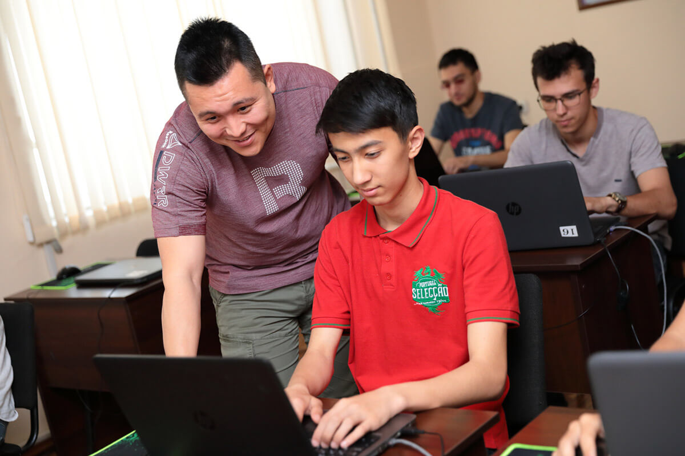
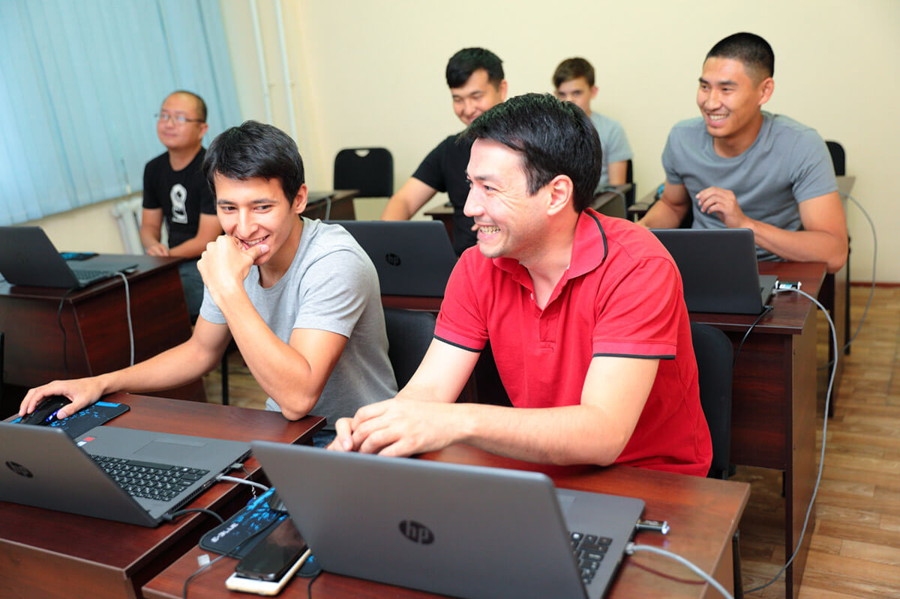
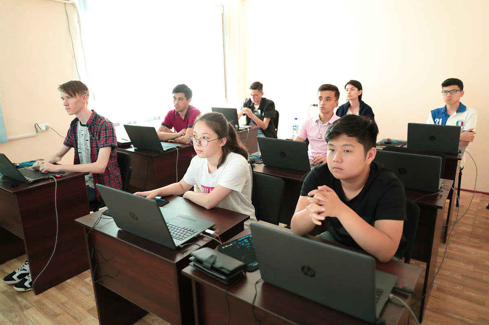
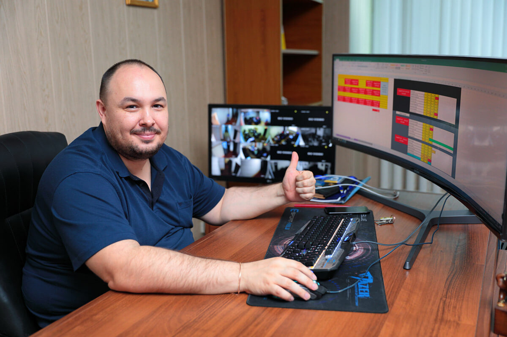
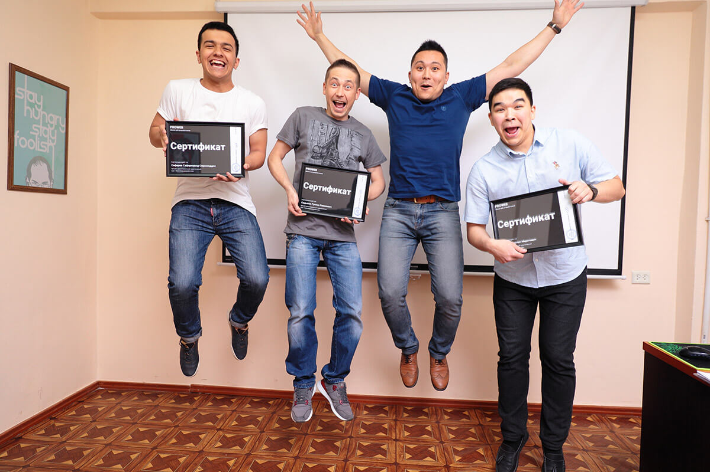

Обучение
Обучение — очное, проходит в нашей школе. Занятия — проводятся на русском языке.
Все кабинеты полностью оборудованы: студентам мы предоставляем ноутбуки на время обучения, в кабинетах есть проекторы с высоким разрешением, кондиционер.
С собой нужна только флешка.

Группы
Каждый месяц мы запускаем группы. В каждой группе — по 6-9 человек.

Студенты
У нас учатся парни и девушки, мужчины и женщины, юноши и подростки: разных национальностей, разного происхождения, разных религий, с разной историей, с разными целями, разного возраста.
Наставник
На уроках — никто не останется без внимания. Наставник поможет каждому. У каждой группы, которую мы запустили, есть своя группа в телеграме. Там студенты общаются с наставником, делятся опытом, помогают друг другу в решении сложных задач.
Видео
Все уроки наставники записывают на видео. Такой подход помогает отстающим в обучении, пропустившим урок и в целом — повышает успеваемость.

Поддержка
Мы хотим, чтобы наши студенты достигали успеха, — и готовы помогать. Если студент не знает с чего начать, как оттолкнуться от нуля, что делать, где искать работу и пр., он всегда может обратиться за советом лично к руководителю школы.

Сертификат
Студентам, по окончанию курса, мы выдаём сертификат.
Сертификат подтверждает, что студент прошёл обучение в нашей школе. Его можно показать потенциальному работодателю.
А ещё его можно повесить на стену.